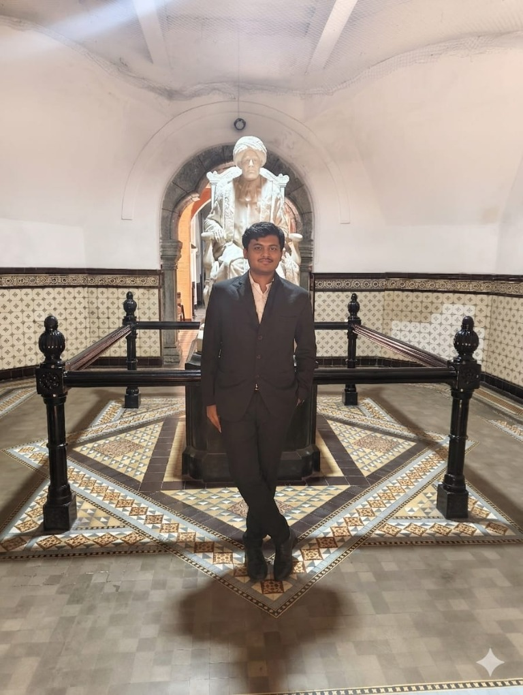
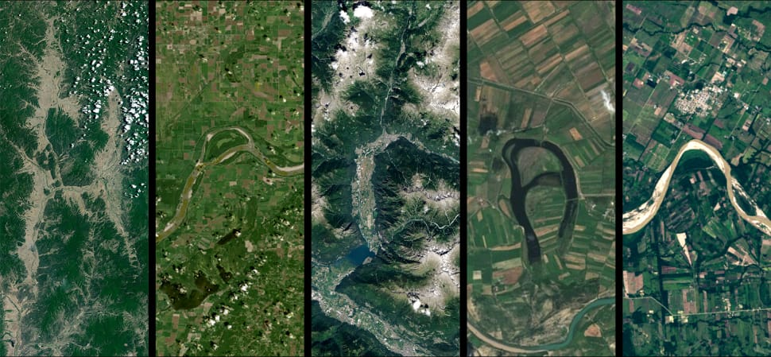
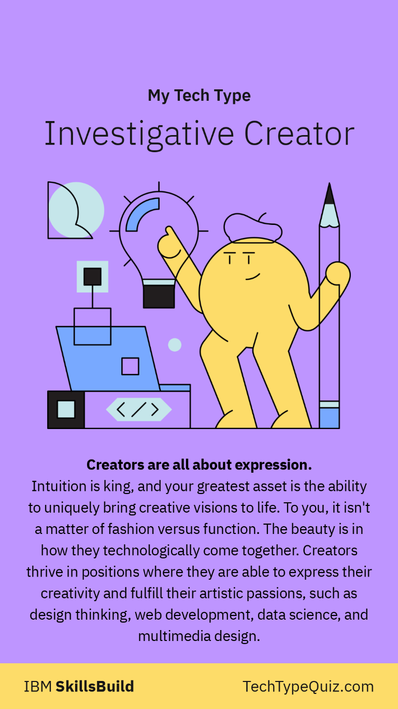

EDUCATIONBUSINESS
UNDERGRADUATE
Bachelor of Business Administration
Undergraduate studies in business administration.
CURIOUS BY DEFAULT
Hi, I'm Haran
A first-generation lawyer, multidisciplinary thinker, and lifelong learner exploring the intersections of law, technology, business, and finance.
SCROLL TO EXPLORE
01 / A LITTLE ABOUT ME
An Absolute Learner / Learning Machine.
I am a first-generation lawyer, multidisciplinary thinker, and lifelong learner exploring the intersections of law, technology, business, and finance. Driven by curiosity and a desire to build, I combine analytical thinking with creative expression, exploring ideas, solving problems, and sharing perspectives through content creation.
02 / THE ROAD SO FAR
From business and law to technology, content, and the ideas I’m building next.

UNDERGRADUATE
Undergraduate studies in business administration.
LAW
Currently studying in the second year of the LL.B. (Hons.) programme.
NXTWAVE
A NxtWave Fellow learning programming, artificial intelligence, and machine learning to build technology-driven solutions.
INTERNSHIP
Internship experience at a fintech company, supporting marketing and research.
SPECTRUMSPECTATOR
Creating technology and learning content for SpectrumSpectator was an early experiment that taught me by doing and remains part of my learning journey.
AWARDS
School Topper in Sanskrit; Student Recognition Award for representing law school at the National Moot Court.
THE DEAL DESK
Continuing to learn and aspiring to become a corporate lawyer with a unique skill set. I’ve started The Deal Desk, my law blog.
03 / WHAT I BRING TO THE TABLE
A multidisciplinary toolkit shaped by technology, law, design, and storytelling.
Web frontend development, Python, MERN stack, artificial intelligence, and UI/UX.
Legal research, due diligence, and compliance.
VS Code, Figma, GitHub, and Hugging Face.
YouTube: InnovateXer. Law blog: The Deal Desk.

MY TECH TYPE
Creators are all about expression. Intuition is king, and your greatest asset is the ability to uniquely bring creative visions to life. To you, it isn’t a matter of fashion versus function. The beauty is in how they technologically come together.
Creators thrive where they can express creativity and fulfill their artistic passions—through design thinking, web development, data science, and multimedia design.
Based on the IBM SkillsBuild Tech Type quiz.
04 / SAY HELLO
Drop a message in the chat, or find me on your favourite corner of the internet.
Demo chat: messages stay on this page and aren’t sent or saved.